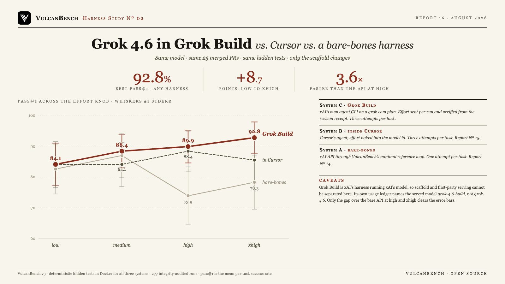

Inside xAI’s own harness the effort knob finally does what it promises. Grok 4.6 in Grok Build climbs 84.1, 88.4, 89.9, 92.8 across low, medium, high and xhigh: monotone, every step up buying accuracy. Neither other system behaves that way. Through the raw API the same knob is non-monotone and collapses at high, from 87.0% to 73.9%; inside Cursor it is nearly flat, moving 4.3 points across the whole range and peaking a level early. The 92.8% at xhigh is the highest pass@1 VulcanBench has recorded for Grok 4.6 on this suite in any harness, 14.5 points above the raw API at the same setting and 7.3 above Cursor’s best. Grok Build is also the fastest of the three at every level, finishing a high-effort task in a median 4.5 minutes against the API’s 16.3. The gains are not free: token use nearly triples from low to xhigh.

| Effort | Grok Build | In Cursor | Bare-bones API | Grok Build time/task | API time/task |
|---|---|---|---|---|---|
| low | 84.1% ±6.9 | 84.1% ±7.5 | 82.6% ±8.1 | 2.4 min | 4.8 min |
| medium | 88.4% ±5.4 | 84.1% ±7.2 | 87.0% ±7.2 | 4.3 min | 14.2 min |
| high | 89.9% ±5.3 | 88.4% ±6.5 | 73.9% ±9.4 | 4.5 min | 16.3 min |
| xhigh | 92.8% ±5.1 | 85.5% ±7.2 | 78.3% ±8.8 | 4.1 min | 15.8 min |
System C (Grok Build) is the grok CLI 1.0.5 on a
grok.com plan, three attempts per task (69 to 70 runs per level, 23/23 tasks), effort sent with
--reasoning-effort and read back from the session receipt on every run. System B is
Report No. 15, three attempts per task. System A is
Report No. 14, one attempt per task. All three are graded by the same
deterministic hidden tests in Docker. pass@1 is the mean per-task success rate; times are medians and include provider
latency. Grok Build clears the bare API’s error bars at high and xhigh; its margin over Cursor sits inside
them at every level.
The effort knob works, and only here. 84.1, 88.4, 89.9, 92.8 is monotone across all four settings, an 8.7-point climb. The raw API over the same knob is non-monotone with a collapse at high; Cursor is flat within 4.3 points and peaks a level early. Of the three delivery systems, xAI’s own is the only one where paying for more reasoning reliably returns more correctness.
92.8% is the best result this suite has seen from Grok 4.6. Higher than any level of either other harness, and 14.5 points above the raw API at the same xhigh setting. pass@3 reaches 95.7%, which is 22 of 23 tasks solved at least once.
A task nothing had ever solved fell. sqlglot-canonicalize-internal-names went unsolved in every run of Report No. 15, by both the API and Cursor, at every setting. Grok Build solves it 2 of 3 times at medium. pennylane-trotter-fragmented, also never solved by the raw API, climbs 0/3, 1/3, 2/3, 3/3 across the knob: the effort curve reproduced inside a single task.
Both vendor harnesses share a blind spot the minimal loop does not have. itertools-strip-prefix is solved by the bare API at all four levels but fails 12 of 12 Cursor attempts and 11 of 12 Grok Build attempts, and the failure is identical in both: not a missed fix but a regression, breaking an existing passing test while making the change. Richer scaffolds edit more broadly, and on this task breadth is the defect.
Speed and accuracy moved together. Grok Build is fastest at every level while scoring highest, finishing high-effort tasks 3.6 times faster than the raw API at the same setting. Its own time curve is nearly flat from medium up, so the extra tokens at xhigh buy accuracy without buying latency.
| Effort | pass@1 | pass@3 | Prompt tokens | Completion | API-equivalent |
|---|---|---|---|---|---|
| low | 84.1% | 91.3% | 40.4M | 454K | $28.93 |
| medium | 88.4% | 95.7% | 80.6M | 986K | $55.71 |
| high | 89.9% | 95.7% | 92.7M | 1.20M | $63.88 |
| xhigh | 92.8% | 95.7% | 112.4M | 1.38M | $75.13 |
Cost is counterfactual value at xAI list prices, not cash: these runs billed a grok.com subscription, so marginal cash was zero. Prompt tokens include cache reads, which dominate agentic loops. Across the sweep that is $223.65 of API-equivalent value for 277 runs. Grok Build is the first subscription harness VulcanBench has measured that reports enough per-run detail to price at all; Cursor reported none.
| Effort | Solved every attempt | Mixed | Never solved |
|---|---|---|---|
| low | 18/23 | 3 | 2 |
| medium | 18/23 | 4 | 1 |
| high | 19/23 | 3 | 1 |
| xhigh | 21/23 | 1 | 1 |
Consistency tightens as effort rises: 21 of 23 tasks solved on every attempt at xhigh, with a single mixed task. Only itertools-strip-prefix goes unsolved above low.
Grok Build is xAI’s harness running xAI’s model, so this study cannot separate scaffold quality from
first-party advantage: prompt tuning, serving, and model variant all sit on the same side of the comparison. There is
direct evidence of the last one. VulcanBench requested grok-4.6 and the session receipt reports
grok-4.6, but the CLI’s own usage ledger names the served model grok-4.6-build. Whether
that is a distinct checkpoint or an internal billing label is not visible from outside, and it is the same class of
unknown that “Cursor Grok 4.6” raised in Report No. 15.
On the measurement side: attempt counts differ across systems (3 vs 3 vs 1), so the bare-bones column carries the
widest error bars and its per-task results turn on single runs. Costs for the bare API in
Report No. 14 are lower bounds, because xAI reports reasoning tokens outside
completion_tokens and the harness under-counted them during that sweep, so cost is not comparable across
systems; the Grok Build figures here are fully measured. Grok Build’s advantage over Cursor is inside the error
bars at every level, and only its margin over the bare API at high and xhigh clears them. The integrity audit certifies
that no run reached the web or the benchmark’s own files; it cannot certify what was in the model’s training
data.
VulcanBench v3: 23 tasks from real merged post-cutoff PRs (Python 9, TypeScript 4, Rust 4, Go 3, JavaScript 3). All three systems are graded by the same deterministic hidden tests in Docker; model judges disabled. System A ran 2026-08-12 (Report No. 14), System B 2026-08-15/16 (Report No. 15), System C 2026-08-17/18 with grok 1.0.5, three attempts per task at each of four levels. Grok Build runs used a custom kernel sandbox profile (Seatbelt) that permits workspace writes while denying reads of the VulcanBench checkout, an agent workspace created outside the repository, web tools removed from the agent entirely, and cross-session memory disabled so repeats cannot recall each other. Every run carries an integrity audit of both leak channels and all 277 are clean. Effort is not taken on trust: each run records the level the CLI reports it actually used, and all 277 match what was requested. pass@1 is the mean per-task success rate, so uneven attempt counts do not bias it. One level, xhigh, failed to start on its first attempt and was rerun in full. The series continues with Report No. 18: the same design applied to GLM 5.3 inside Z.ai’s own ZCode harness, the first study where the product side bills a subscription.
{kind=link}